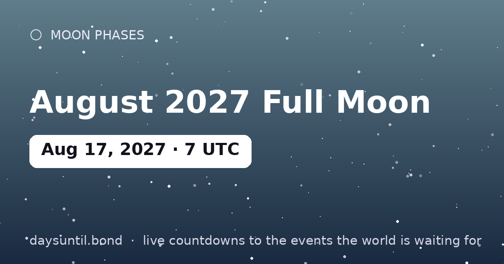

How Many Days Until August 2027 Full Moon?
August 2027 Full Moon falls on Tuesday, August 17, 2027.
As of October 24, 2026: 297 days to go — 42 weeks and 3 days, 212 weekdays (85 weekend days), about 7,128 hours.

Quick facts
| Peak (UTC) | August 17, 2027 · 07:30 |
|---|---|
| Zodiac position | 24°12' Aquarius |
| Moon phase | Full Moon (100% illumination) |
| Cycle | Lunation ~29.5 days |
About August 2027 Full Moon
The August 2027 full moon peaks at 07:30 UTC on August 17, 2027, at 24°12' Aquarius in the tropical zodiac. Full moons always rise at sunset and set at sunrise, so the best viewing is any time the Moon is up that night — no equipment needed.
In astrology, the full moon in Aquarius is considered the month's closing chapter: what began at the Aquarius new moon six months earlier reaches fullness, and what is no longer working becomes impossible to ignore. Monthly full moons are the sky's built-in review meetings.
Your August 2027 Full Moon countdown milestones
It is easier to plan against fixed points than against a number that moves. These are the dates on which the countdown to August 2027 Full Moon passes each marker between now and the day itself — the last one falls on Monday 16 August, when there will be 1 day left.
| Milestone | Day | Date | Remaining |
|---|---|---|---|
| 200 days | Friday | 29 January 2027 | 200 days to go |
| 100 days | Sunday | 09 May 2027 | 100 days to go |
| 50 days | Monday | 28 June 2027 | 50 days to go |
| 30 days | Sunday | 18 July 2027 | 30 days to go |
| 14 days | Tuesday | 03 August 2027 | 14 days to go |
| 7 days | Tuesday | 10 August 2027 | 7 days to go |
| 3 days | Saturday | 14 August 2027 | 3 days to go |
| 1 days | Monday | 16 August 2027 | 1 day to go |
How the remaining time breaks down
297 days is the headline, but it is rarely the number that helps. 212 of those are weekdays and 85 fall on a weekend, which is the split that matters if you are planning around work. It is 42 weeks and 3 days, or roughly 9.8 months, or about 7,128 hours.
| Unit | Until August 2027 Full Moon |
|---|---|
| Days | 297 |
| Weeks | 42 weeks and 3 days |
| Months (approx) | 9.8 |
| Weekdays | 212 |
| Weekend days | 85 |
| Hours | 7,128 |
| Sleeps | 297 |
Working days are Monday to Friday and do not subtract public holidays, which vary by country and employer — the full month-by-month split is on our weekday page for August 2027 Full Moon.